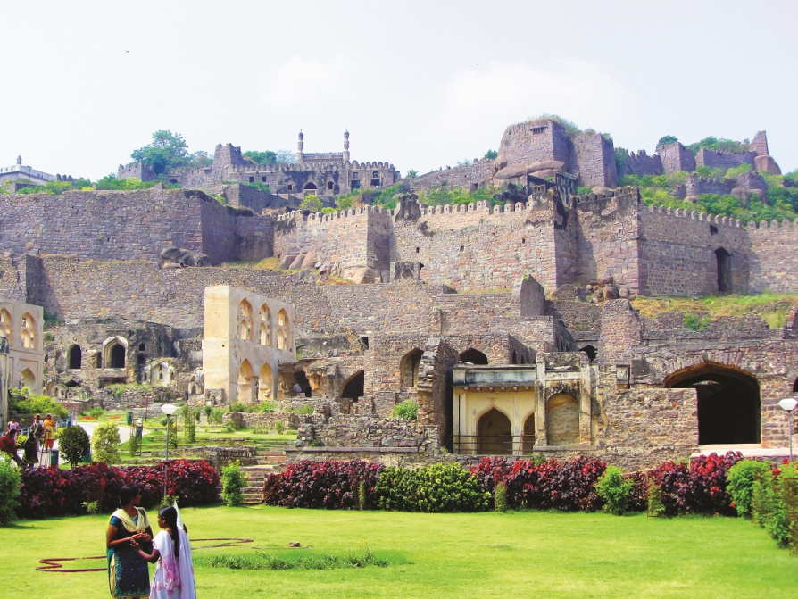

History of GolcondaFort
Golconda was originally known as Mankal. Golconda Fort was first built by the Kakatiyas as part of their western defenses along the lines of the Kondapalli Fort. The city and the fortress were built on a granite hill that is 120 meters (390 ft) high, surrounded by massive battlements. The fort was rebuilt and strengthened by Rani Rudrama Devi and her successor Prataparudra. Later, the fort came under the control of the Musunuri Nayakas, who defeated the Tughlaqi army occupying Warangal.It was ceded by Musunuri Kapaya Nayaka to the Bahmani Sultanate as part of a treaty in 1364.
Under the Bahmani Sultanate, Golconda slowly rose to prominence. Sultan Quli Qutb-ul-Mulk (r. 1487–1543), sent by the Bahmanids as a governor at Golconda, established the city as the seat of his government around 1501. Bahmani rule gradually weakened during this period, and Sultan Quli formally became independent in 1538, establishing the Qutb Shahi dynasty based in Golconda. Over a period of 62 years, the mud fort was expanded by the first three Qutb Shahi sultans into the present structure, a massive fortification of granite extending around 5 km (3.1 mi) in circumference. It remained the capital of the Qutb Shahi dynasty until 1590 when the capital was shifted to Hyderabad. The Qutb Shahis expanded the fort, whose 7 km (4.3 mi) outer wall enclosed the city.
During the early seventeenth century a strong cotton-weaving industry existed in Golconda. Large quantities of cotton were produced for domestic and exports consumption. High quality plain or patterned cloth made of muslin and calico was produced. Plain cloth was available as white or brown colour, in bleached or dyed variety. Exports of this cloth was to Persia and European countries. Patterned cloth was made of prints which were made indigenously with indigo for blue, chay-root for red coloured prints and vegetable yellow. Patterned cloth exports were mainly to Java, Sumatra and other eastern countries.
The fort finally fell into ruin in 1687, after an eight-month-long siege led to its fall at the hands of the Mughal emperor Aurangzeb.
.
Explore Golconda Fort!

Places to eat
|

Best time to visit Golconda Fort |

Things to do |

About Golconda Fort |
How to reach Golconda Fort |